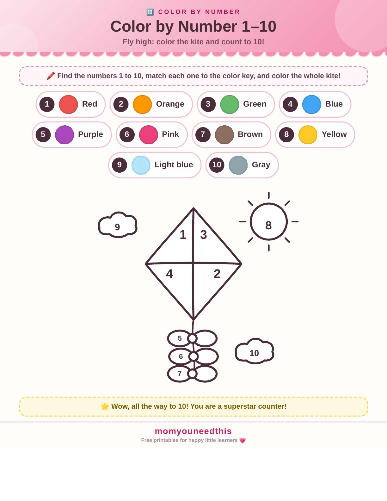

Color by Number 1 10 For Kids Practice Numbers To Ten With Colorful Pictures
Level up number practice with this color by number 1 10 set — pages that go all the way to 10, with more numbers, more colors and more fun.
Quick Answer
This free printable color by number 1 10 page helps toddlers and preschoolers practice recognizing numbers up to ten. The longer key builds on 1-to-5 skills with a satisfying challenge. Download and print at home with no signup needed — great for preschoolers ages 3 to 5 ready for bigger numbers.
At a Glance
- Ages: Toddlers and preschoolers
- Activity: Coloring by a number key, numbers 1–10
- Skills: Number recognition to 10
- Format: Printable worksheets (PDF)
- Cost: Free, no signup
🔟 Learn Numbers 1 To 10
Children work with a ten-number color key, scanning the picture for each number and coloring its sections — solid practice recognizing every number from 1 to 10.
How Color by Number Works
- Find a number on the key. The key at the top of the page pairs every number from 1 to 10 with its own colour.
- Find that number in the picture. Scan the picture and hunt down every section marked with the number.
- Colour every section with it. Fill them all in with the key's colour, then move on to the next number — the picture appears as you go.

🖨️ Download Your Free Color by Number 1 10 Printable
Print it out, grab the crayons, and you're ready — no signup needed.
⬇️ Download Free Printable 🖨️ Print(opens in new tab)🎁 Free printable for toddlers & preschoolers
Printing Tips
Print at 100% so the small numbered sections stay readable. Crayons work well, and fine-tip markers give older kids more control in the tiniest spaces. Print two copies if siblings both want the page — racing to finish is half the fun.
🔍 Sing The Numbers
Sing a counting song from 1 to 10 before starting, then point to each number on the key as you sing it. The melody helps number order stick in little memories.
💡 Why Practice To 10?
Recognizing numbers to 10 is a core preschool milestone. Color by number gives repeated, playful exposure — far more engaging than flashcards for most young children.
📚 Keep Exploring
Discover more free color activities, printables, and learning ideas created for busy parents.
🎁 Back to Color By Number Pages❓ Frequently Asked Questions
Is this harder than the 1 to 5 pages?
Yes — the key has twice as many numbers, so it suits children who already recognize 1 to 5 comfortably and are ready for a bigger challenge.
Are these color by number 1 10 printables really free?
Yes — every printable on MomYouNeedThis is 100% free to download and print. No signup, no payment, just tap the download button.
How can I tell if my child is ready?
If they can point to and name numbers 1 to 5 without help, they are ready to try 1 to 10. Offer help with 6 to 10 at first.
What if my child mixes up 6 and 9?
It happens to almost every child — 6 and 9 are the same shape flipped. Point out that 6 curves like a snail shell sitting on the ground, while 9 is a balloon floating on a string. Practise the pair on their own, and the mix-ups fade.
Can I print the page more than once?
Yes — print as many copies as you like. A second copy is handy for siblings, for a fresh start after a wobbly first try, or for trying a completely different set of colours.
💜 More Color Fun You'll Love
Keep the color learning going with these related activities.
🔢 Color by Numbers 1–5 🎨 Color by Number Review 🦖 Dinosaur Color by Number